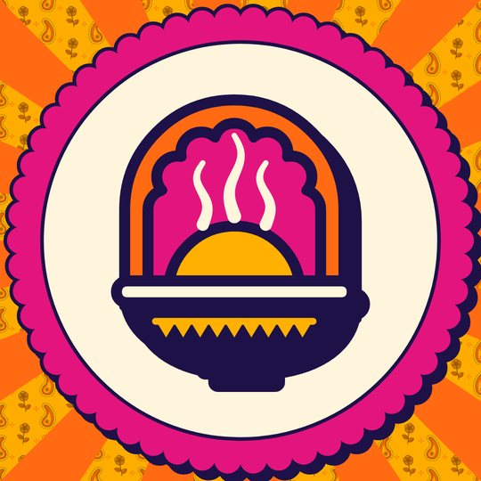
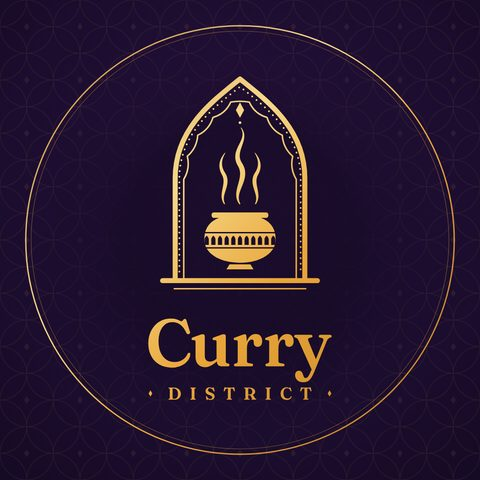
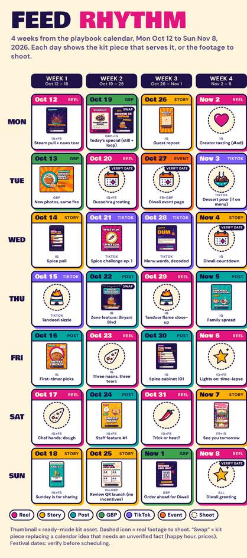
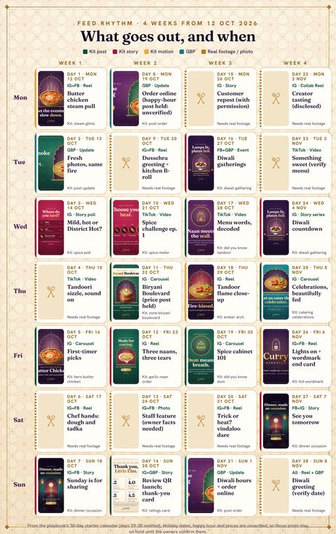
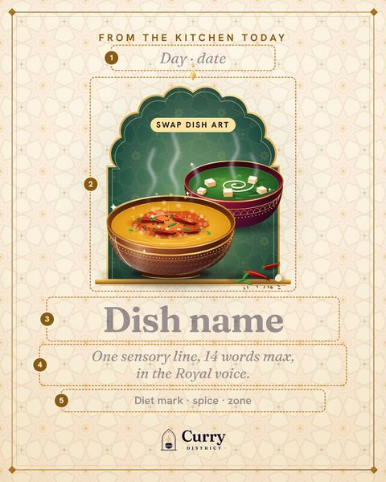
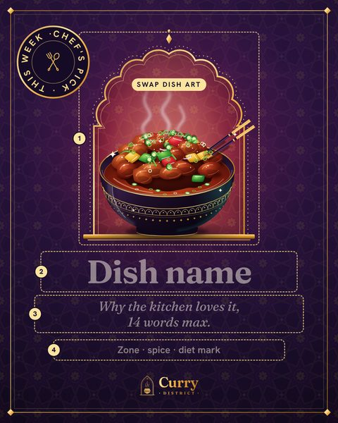

Social kit · Posts, stories, covers, motion
Make every scroll a craving
The food is the best thing about Curry District. A feed should look like it. Here is a full, colourful kit in both directions, ready to fill with your dishes the day you say yes.
01
The feed, on a phone
Twelve tiles, one colour story. Flip A and B to compare. Tap any tile to open it full-size; the ▶ tiles are looping motion posts.
A · Bazaar

Curry District
Indian restaurant · Little Elm, TX
Sample profile, handle to be confirmed


B · Royal

Curry District
Indian restaurant · Little Elm, TX
Sample profile, handle to be confirmed


One look, twelve posts
Every tile shares a colour system and a layout family, so the grid reads as one place instead of a pile of photos.
Built for the 3:4 crop
The profile grid shows a tall crop of each post. We keep the dish in the middle so nothing important gets trimmed. (Our read of today's grid; worth a check in-app.)
Bright, dark, bright
Tiles alternate between light and deep colours, like a checkerboard, so the eye keeps moving down the page.
02
Highlights & profile
What a new follower sees first: a profile photo, a cover and eight round highlights. Tap anything to open it; swipe the covers below.


Curry District
Indian restaurant · Little Elm, TX


Curry District
Indian restaurant · Little Elm, TX


03
The whole kit
Every piece, both directions. Filter by what it is for. Videos play in the viewer, and each piece can be saved from there.
04
Motion posts
Three six-second loops per direction. They play silently and repeat, which is how most people watch a feed. Use the button on each phone to pause.
More motioncurry.district Garma-garam, straight from the wok.
Motion · Garma-garam steamSix-second loop: steam curls off a wok of Chilli Chicken while the sunburst turns; motion stops the scroll, the dish does the selling.
curry.district Rate the heat, 1 to 5. Be honest.
Motion · Spice sparkle burstThree sparkle bursts per loop pop off a wobbling chilli: pure Bollywood-poster energy that still lands one clear line.
curry.district Today’s special, same spot, new dish.
Motion · Today’s special wipeTemplate loop for the daily special: festival-colour bars wipe in the dish name (no price, ever); swap the name and art per day.
curry.district Slow-simmered. Tandoor-fired. Made for sharing.
Motion · Steam & glintsA 6-second loop: steam rises and gold glints flicker off the karahi.
curry.district Dinner, made an occasion.
Motion · Foil shimmerA 6-second loop: a foil light sweep runs across the wordmark, with sparkles.
curry.district Where the tandoor meets the evening.
Motion · Embers past the archA 6-second loop: embers drift up past the arch from the tandoori platter.
05
The weekly rhythm
Four weeks, day by day: what goes out and which kit piece serves it. A dashed box means real footage we would shoot on a photo day.
See the calendar



Content pillars
| Pillar | In the feed | Kit piece | Basis |
|---|---|---|---|
| Steam & fire | Steam pull, tandoor flame, sizzle | Motion posts (steam, ember arch) | Our read |
| Pull & tear | Naan tear, dip, butter drip | Footage to shoot on the photo day | Our read |
| Chef hands | Dough, tadka, plating | Footage to shoot; staff-pick template | Our read |
| Spice-level challenge | Mild, Texas-hot, then a dare | Spice-meter post, spice-poll story | Our read |
| Combos, explained | What a table gets, once the owners confirm the details | Daily-special template | Our read |
| Festival days | Dussehra, Diwali, Thanksgiving feast (dates to verify) | Diwali stories, wordmark loop | Our read |
| Staff features | Name, role, favourite dish (needs owner facts) | Staff-pick and chef's-pick templates | Our read |
| Neighbours & guests | Guest reposts with permission and credit; Little Elm life | Guest-repost story frame | Our read |
Starter cadence
| Where | Starting rhythm | Basis |
|---|---|---|
| 3 Reels, 1 carousel and 4–7 story frames a week | Our read | |
| Mirrors Instagram, plus Events | Our read | |
| TikTok | 3 a week, reused from Reels | Our read |
| Google profile | 1 post a week. About 25–30 photos to start, then 4–8 a month. | Weekly post: our readPhoto counts: sourced |
| Shoot days | Batch-shoot every second week, sized to what the team can handle | Our read |
| Captions | Hook in eight words or fewer, one sensory detail, where and when, one ask, 3–5 hashtags (check the current limit in-app) | Our read |
What we would look at each month
Google profile
- Calls and direction requests
- Website and order clicks
- Photo views
- New reviews and average rating
- Reply rate
Social
- Reach and 3-second hold rate
- Saves and shares per reach
- Profile visits and link taps
- Tags from guests
06
Templates they can edit
Every post here is a layout with a few swap zones, so a busy kitchen can keep the feed going without a designer on call.
Pick a layout
Daily special, chef's pick, zone sign, did-you-know. Each one marks its swap zones with numbers.
Swap four things
Dish art, name, one line and the tags. Fonts, colours and the logo stay where they are.
Post it
Export at 1080×1350 for posts or 1080×1920 for stories, add the caption, done.


TemplateDaily special · templateFilled inDaily special · filled example

TemplateChef's pick · templateFilled inChef's pick · filled exampleHow we would hand them over
Today the templates are built as HTML and SVG. If we agree to work together, we propose to hand them over as Canva, Figma or Photoshop-ready files, whichever your team prefers, with the fonts, colour swatches and a one-page how-to. Nothing is handed over until we have agreed the scope.
07
What we need from you
Four small things turn this sample into your feed.
Logo files
Any logo files you already have, vector if possible. Then the profile photo and covers use your real mark where you want it.
Your handles
Which Instagram, Facebook and TikTok accounts are the real ones. We have seen more than one possible Instagram name.
A photo day
Half a day in the kitchen and dining room. We bring a 25-shot list.
Approve the captions
Every caption in the kit is a placeholder. You tell us what is true: hours, happy hour, which dishes, any wording about diets. Nothing posts until you say yes.
Spec notes: what we have not verified
Sizes and safe zones below come from secondary sources and our own testing. We flag them on each piece. Please treat them as a starting point and check in the app.
- Google profile images. The 720×720 logo, 16:9 cover, 4:3 posts (1200×900) and 1:1 tiles (1600 px) come from secondary sources, not Google's own help page. Check in the dashboard.
- Facebook cover. The desktop and mobile crops are approximate. The crop-guide image shows what we assumed. Check after the first upload.
- Story safe zones. About 250 px at the top and 340 px at the bottom are approximate app overlays. The apps change; verify in-app.
- Profile grid. The 3:4 tile crop is our understanding of how Instagram shows the grid today.
- Samples only. QR codes in the kit are look-alikes and do not scan. Ratings cards use publicly listed figures with the month shown; refresh them before posting. No prices, offers or hours appear in any template. The Diwali date (8 November 2026) is our best read and needs checking before anything is scheduled.
08
Next door: profile, motion, calendar
The kit works hardest alongside these three.